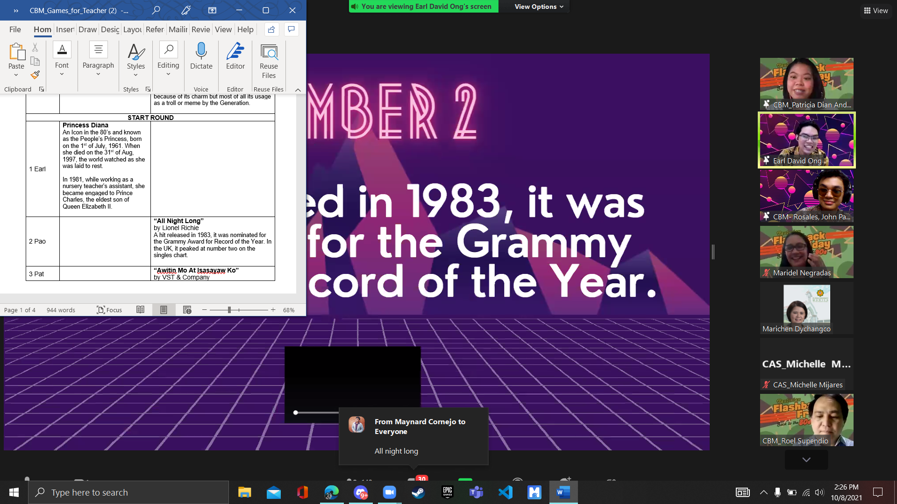

Academic and Extra-curricular Achievements
School and Achievements
San Pablo Christian School
Elementary & Junior High School
San Pablo Christian School taught me how to live. This school is where I met my first main circle of friends which I value so much before, now, and in the future as well. This school as well as its teachers gave me a lot of memories and lessons in life which I will always keep remember. Without the lessons, opportunities, and experience they gave me, I John Paolo M. Rosales will be lost and hopeless in life. They served as my second home when I was a student, and I am very thankful that I became a student at this school.
Achievements
- With Honors (2014-2019)
- Mr. Intramurals (2016
- Lakan ng San Pablo Christian School (2017)
- Masters of Ceremony in Acquaintance Party (2018)
- 2nd runner up Promenade Night (2019)

Laguna State Polytechnic University
Senior High School
Laguna State Polytechnic University is where I got out of my comfort zone as it is very different from my previous school which I considered as my second home. This university taught me the reality of life as I interact with various kinds of people. I had challenges that made me what I am right now. I am thankful as they helped my mind to become clear on what path should I take in the future.
Achievements
- With High Honors (2021)
- Graduated with honors (2019-2021)

Saint Paul University Manila
College
Saint Paul University Manila along with its services made me feel that I am in the right university to start my journey before going to the professional world. I am looking forward to more memories I will create in this university restrictions brought by the pandemic.
Achievements
- Attended the 7-week session of John Maxwell Training (2021)
- Hosted the CBM Teacher's Day Culminating Activity (2021)
